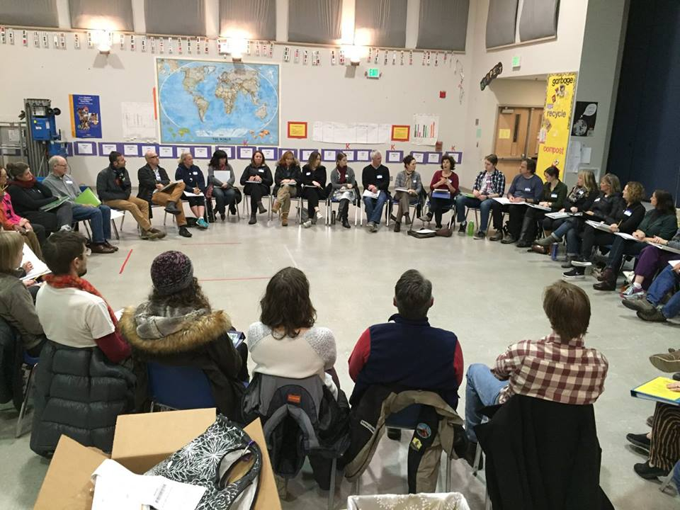
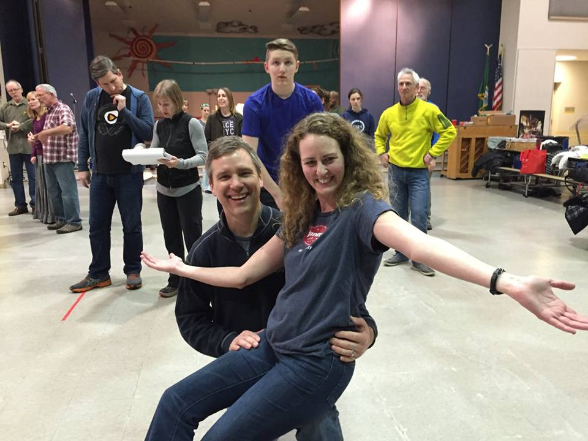
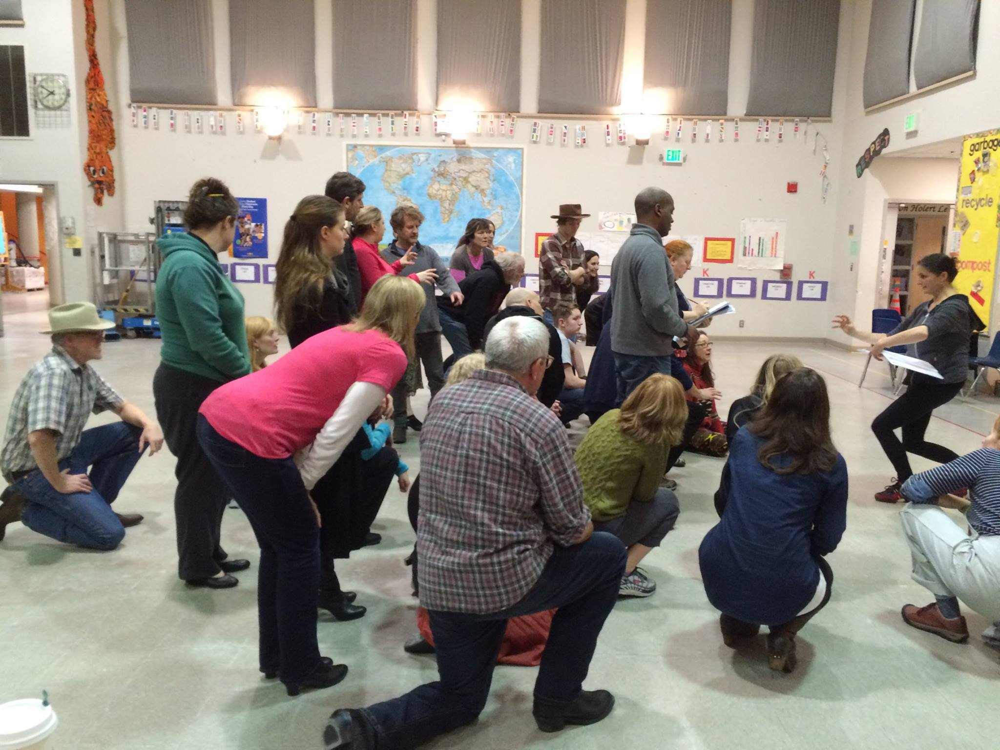

Woodland Park Players was formed by a small group of parents looking for a way to find greater community and raise funds for art programs in the Seattle Public Schools. The Woodland Park Players has grown in a short
time, into an active community theater company that committed itself to family-oriented musical productions
as well as to support our local schools.
According to our by-laws, the Players is a group of adult members (parents, teachers, other residents) who live
in the Woodland Park neighborhood and who join together to produce a musical show each year.
In addition, the Players must donate its proceeds to school or school district needs.
Woodland Park Players dues are $40/person, and new members are always welcome.
Mission Statement: To create the opportunity for adult members of the Woodland Park community to get involved in the many aspects of theater while creating lasting friendships that build a stronger community. We also want to generate funds to benefit the Seattle Public Schools art curriculum.
Sign up for auditions
General auditions: Saturday, November 19th, 10am-5pm, West Woodland Elementary (5601 4th Ave NW)
Dance call Everyone: Monday, November 21st, 6-9pm, West Woodland Elementary
Reading and Singing Callback: Tuesday, November 22nd, 6-9pm, West Woodland Elementary
To try out for a lead or speaking role, please prepare:
• 60-90 second monologue
• 60 second portion of a song: verse and chorus
• Please bring sheet music
To try out for an ensemble role, please prepare:
• 60 second song (could be as simple as Happy Birthday or Twinkle Twinkle)
• 60 second joke or story (instead of monologue)
• Please bring sheet music
{kind=link}
{kind=link}
{kind=link}